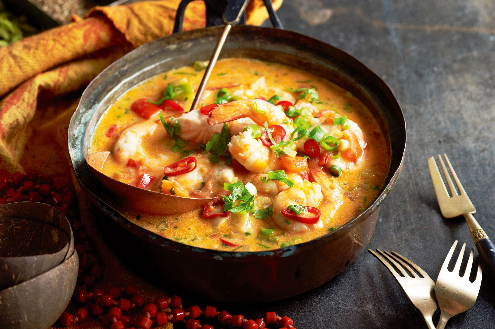

BEM-VINDO!
A Comunidade Sudeste têm como objetivo, introduzir uma pequena parte desta maravilhosa região do país. Bom, esta região possui uma variedade de culturas muito grande, pois além de ser colonizada inicialmente pelos portugueses, recebeu também, imigrantes italianos, japoneses, libaneses, sírios e espanhóis. Esta região era muito bem vista por eles, tanto que a primeira capital do Brasil foi estabelecida nesta região, no estado do Rio de Janeiro. É uma região litorânea e muito tropical, então haviam muitos recursos e potencial de estruturar portos e comércios. Não podemos esquecer das famosas minas, riquíssimas com minérios muito valorizados, por isso foi dado o nome de um dos estados "Minas Gerais"!
-

A bandeira sudestina tem uma paleta de cores que foca nos azuis e um amarelo destaque. O amarelo representa luz e os azuis o mar, que pode ser encontrado em 3 dos 4 estados da região, o símbolo no meio é a silhueta do sudeste no mapa brasileiro.
Nossa mascote é inspirada em um dos animais comuns na região sudeste, a capivara, também é inspirada em um evento cultural muito comum entre umbandistas, a festa de Iemanjá que comumente ocorre nessa região, e em lugares com praia. Seu nome “Yéyé” é inspirado no significado do nome de Iemanjá, seu nome tem origem nos termos do idioma Iorubá (língua nigero-congolesa) “Yèyé omo ejá”, que significam “mãe cujos filhos são como peixes”.
COMIDAS TÍPICAS
As comidas típicas da região sudeste são de grande variedade, então escolhemos um prato para cada estado. Para Minas gerais escolhemos o famoso “Pão de Queijo”, para Rio de Janeiro escolhemos o "Joelho", para São Paulo foi escolhido o "Sonho" e por último mas não menos importante para Espírito Santo escolhemos a "moqueca".
PÃO DE QUEIJO

O pão de queijo mineiro é uma receita clássica da culinária brasileira que se tornou tradicional por todo o país.Apesar de ser denominado como "pão", o pão de queijo consiste basicamente em um tipo de biscoito de polvilho azedo ou doce acrescido de ovos, sal, óleo vegetal e queijo, de consistência macia e elástica, existindo pequenas variações.
JOELHO
O popularmente chamado joelho, também conhecido como italiano, é um salgado tradicional na cidade do Rio de Janeiro e Região Metropolitana. O joelho é uma verdadeira atração dos balcões de botecos, bares, casas de suco e estabelecimentos de cardápio veloz e barato, para quem tem fome e pressa pelas ruas do Rio de Janeiro.
SONHO

O sonho é um doce tradicional das padarias brasileiras. De origem paulista, o lanche é um derivado de uma sobremesa alemã criada no século XVII, em Berlim, chamada Berliner. Diferente do irmão europeu, acompanhado com doces vermelhos, a versão brasileira é recheada com creme de baunilha, mas pode ser encontrada em outros sabores.
MOQUECA
No Espírito Santo, os índios preparavam a Moqueca com temperos nativos: tomates maduros, tinta de urucum, limão, cebola, coentro e pimenta. Hoje a moqueca capixaba é preparada também com azeite doce e na Panela de barro, assim adquirindo quatro características fundamentais: cor, sabor, perfume e consistência. A moqueca é uma opção perfeita para uma refeição especial, pois é fácil de preparar ao mesmo tempo em que é extremamente saborosa.
CARTOGRAFIA
A região sudeste consta com quatro estados brasileiros, São Paulo, Minas Gerais, Rio de Janeiro e Espírito Santo. Fazendo limite ao Sul com o Paraná, ao Centro-Oeste com Mato Grosso do Sul e Goiás, e ao Nordeste com a Bahia. Apenas Minas Gerais não tem costa marítima, em relação aos quatro estados.
ASPECTOS NATURAIS
Seus relevos contam com diversas serras de grandes altitudes em boa parte da região. O planalto central que é mais voltado à região central do país, então pega muito mais Minas Gerais e meridional que passa para a parte centro-oeste e sul do Brasil. O planalto do leste é o que predomina o Sudeste e abriga as grandes cerras da região.
O Clima se baseia em tropical, subtropical, tropical de altitude nas áreas mais elevadas da região e tropical litrâneo. Então possui um clima bastante úmido e em diversas áreas é bem fresco.
Por fim, a região possui quatro vegetações principais: Cerrado, Caatinga, Araucária e Mata Atlântica. Estas vegetações variam de acordo com o clima de cada área do Sudeste
ECONOMIA
As bases da economia desta região são: A produção industrial, agrícola e os setores do comércio e serviços, especialmente o turismo. O Sudeste é a Região mais rica do País e a mais industrializada. Focando na indústria, a automobilística, a siderúrgica, petroquímica, naval e petrolífera são as áreas com maiores destaques. Além do mais é onde se concentra a maior parte da população, sendo o primeiro ponto turístico dos imigrantes, consequentemente, é o centro econômico do país.
Focando um pouco no comércio, os maiores destaques acabam sendo o varejo, o atacado, a venda de seguros e turismo que acontecem durante o ano todo.
SOBRE A MÚSICA
-
A música escolhida é um samba/pagode de Zeca Pagodinho, Ogum, escolhemos essa música pois além de ter relação com a umbanda é cantada por um cantor sudestino. Um trecho da música que influenciou nossa escolha foi: “Eu sincretizado na fé; Sou carregado de axé; E protegido por um cavaleiro nobre”.
REFERÊNCIAS
https://www.youtube.com/watch?v=m_6enZqqbpI
https://euquerosabertudo.com/meio-ambiente/porque-o-salgado-chamado-de-joelho.html#:~:text=O%20que%20%C3%A9%20joelho%20carioca%3F%20O%20popularmente%20chamado,as%20padarias%2C%20pequenas%20lanchonetes%20e%20quiosques%20daquela%20capital.
https://www.hypeness.com.br/2019/06/classico-da-comida-carioca-rio-ganha-1a-casa-especializada-em-joelhos/
https://guaraparivirtual.com.br/142/moqueca-capixaba-historia-receita#:~:text=Dessa%20forma%2C%20a%20Moqueca%20Capixaba%20obt%C3%A9m%20quatro%20caracter%C3%ADsticas,confec%C3%A7%C3%A3o%20da%20Moqueca%20Capixaba%20e%20da%20Torta%20Capixaba.
https://listologia.com/receita-de-moqueca/#:~:text=A%20moqueca%20%C3%A9%20um%20prato%20saud%C3%A1vel%20e%20nutritivo%2C,e%20amigos%20em%20um%20almo%C3%A7o%20ou%20jantar%20especial.
https://diariodonordeste.verdesmares.com.br/estilo-de-vida/culinaria/sonho-aprenda-a-fazer-o-doce-tradicional-de-padaria-1.3193325
https://www.tudogostoso.com.br/receita/1443-pao-de-queijo.html
https://www.google.com/url?sa=t&source=web&rct=j&url=https://www.educamaisbrasil.com.br/enem/matematica/economia-da-regiao-sudeste%23:~:text%3DAlguns%2520ramos%2520de%2520maior%2520import%25C3%25A2ncia,algod%25C3%25A3o%252C%2520milho%252C%2520entre%2520outros.&ved=2ahUKEwjdjpef4fn-AhVuFrkGHQ_gB28QFnoECFsQBQ&usg=AOvVaw1gna_DSeI7XzZqF_tkthiz
https://www.google.com/url?sa=t&source=web&rct=j&url=https://www.maisbolsas.com.br/enem/geografia/regiao-sudeste-do-brasil%23:~:text%3DEconomia%2520da%2520regi%25C3%25A3o%2520sudeste%26text%3D%25C3%2589%2520respons%25C3%25A1vel%2520por%252055%252C2,o%2520destaque%2520da%2520regi%25C3%25A3o%2520sudeste.&ved=2ahUKEwjdjpef4fn-AhVuFrkGHQ_gB28QFnoECF0QBQ&usg=AOvVaw1saM0LGWsPAVXTqcZ-oHYH
https://www.google.com/url?sa=t&source=web&rct=j&url=https://blogdoenem.com.br/geografia-regiao-sudeste/%23:~:text%3DO%2520sudeste%252C%2520como%2520j%25C3%25A1%2520vimos,em%2520menor%2520express%25C3%25A3o%2520S%25C3%25A3o%2520Paulo).&ved=2ahUKEwjdjpef4fn-AhVuFrkGHQ_gB28QFnoECF4QBQ&usg=AOvVaw1ds_8sl9IMRHD2jMJLi6x9
https://www.google.com/url?sa=t&source=web&rct=j&url=https://www.todamateria.com.br/economia-da-regiao-sudeste/%23:~:text%3DA%2520economia%2520da%2520Regi%25C3%25A3o%2520Sudeste,Brasileiro%2520de%2520Geografia%2520e%2520Estat%25C3%25ADstica).&ved=2ahUKEwjdjpef4fn-AhVuFrkGHQ_gB28QFnoECFwQBQ&usg=AOvVaw38PThSCWZ-Xd0QBjRwfsrp
https://www.google.com/url?sa=t&source=web&rct=j&url=https://www.todamateria.com.br/regiao-sudeste/%23:~:text%3DIndustrializa%25C3%25A7%25C3%25A3o,concentra%25C3%25A7%25C3%25A3o%2520de%2520popula%25C3%25A7%25C3%25A3o%2520do%2520pa%25C3%25ADs.&ved=2ahUKEwjx8vOg4fn-AhX0BrkGHYwjClsQFnoECAMQBQ&usg=AOvVaw1w3-xjOfs4wFx1xVdyonBk
Material, atlas geográfico